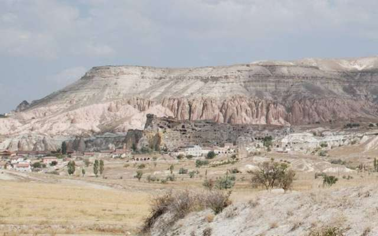
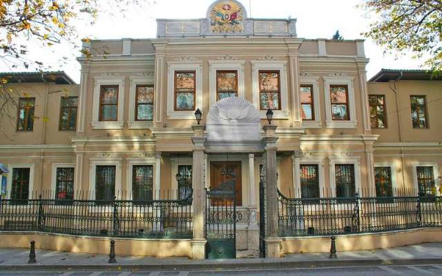
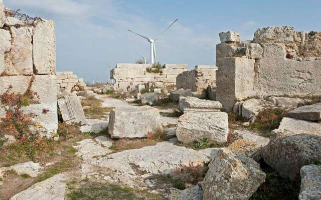
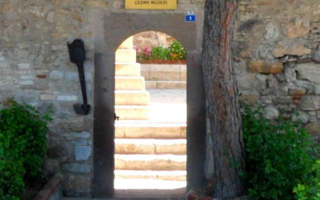

358 places
 Afrodisias Müzesi ve ÖrenyeriAydın · Archaeological site
Afrodisias Müzesi ve ÖrenyeriAydın · Archaeological site Ani ÖrenyeriKars · Archaeological site
Ani ÖrenyeriKars · Archaeological site Arslantepe ÖrenyeriMalatya · Archaeological site
Arslantepe ÖrenyeriMalatya · Archaeological site Bergama Akropolüİzmir · Archaeological site
Bergama Akropolüİzmir · Archaeological site Bergama Asklepion Örenyeriİzmir · Archaeological site
Bergama Asklepion Örenyeriİzmir · Archaeological site Bergama Kızılavluİzmir · Archaeological site
Bergama Kızılavluİzmir · Archaeological site Derinkuyu Yeraltı ŞehriNevşehir · Underground city
Derinkuyu Yeraltı ŞehriNevşehir · Underground city Efesİzmir · Archaeological site
Efesİzmir · Archaeological site El Nazar KilisesiNevşehir · Religious building
El Nazar KilisesiNevşehir · Religious building Gordion MüzesiAnkara · Museum
Gordion MüzesiAnkara · Museum GöbeklitepeŞanlıurfa · Archaeological site
GöbeklitepeŞanlıurfa · Archaeological site Göreme ÖrenyeriNevşehir · Archaeological site
Göreme ÖrenyeriNevşehir · Archaeological site HattuşaÇorum · Archaeological site
HattuşaÇorum · Archaeological site Hierapolis (Pamukkale) ÖrenyeriDenizli · Archaeological site
Hierapolis (Pamukkale) ÖrenyeriDenizli · Archaeological site Karanlık Kilise (Göreme)Nevşehir · Religious building
Karanlık Kilise (Göreme)Nevşehir · Religious building Kaymaklı Yeraltı ŞehriNevşehir · Underground city
Kaymaklı Yeraltı ŞehriNevşehir · Underground city Nemrut DağıAdıyaman · Archaeological site
Nemrut DağıAdıyaman · Archaeological site TroyaÇanakkale · Archaeological site
TroyaÇanakkale · Archaeological site Xanthos ÖrenyeriAntalya · Archaeological site
Xanthos ÖrenyeriAntalya · Archaeological site Zelve - Paşabağlar ÖrenyeriNevşehir · Archaeological site
Zelve - Paşabağlar ÖrenyeriNevşehir · Archaeological site Çatalhöyük ÖrenyeriKonya · Archaeological site
Çatalhöyük ÖrenyeriKonya · Archaeological site
Çavuşin Örenyeri (Çavuşin Kilisesi)Nevşehir · Archaeological site 15 Temmuz Demokrasi MüzesiAnkara · Museum
15 Temmuz Demokrasi MüzesiAnkara · Museum Adam Mickiewicz Müzesiİstanbul · Museum
Adam Mickiewicz Müzesiİstanbul · Museum Adana Atatürk Evi MüzesiAdana · Museum
Adana Atatürk Evi MüzesiAdana · Museum Adana MüzesiAdana · Museum
Adana MüzesiAdana · Museum Adıyaman MüzesiAdıyaman · Museum
Adıyaman MüzesiAdıyaman · Museum Afyonkarahisar MüzesiAfyonkarahisar · Museum
Afyonkarahisar MüzesiAfyonkarahisar · Museum Agora Örenyeriİzmir · Archaeological site
Agora Örenyeriİzmir · Archaeological site Ahlat MüzesiBitlis · Museum
Ahlat MüzesiBitlis · Museum Ahlat Selçuklu MezarlığıBitlis · Archaeological siteAigai ÖrenyeriManisa · Archaeological site
Ahlat Selçuklu MezarlığıBitlis · Archaeological siteAigai ÖrenyeriManisa · Archaeological site Aizanoi ÖrenyeriKütahya · Archaeological siteAkdamar Anıt MüzesiVan · MuseumAksaray Manastır Vadisi ÖrenyeriAksaray · Archaeological site
Aizanoi ÖrenyeriKütahya · Archaeological siteAkdamar Anıt MüzesiVan · MuseumAksaray Manastır Vadisi ÖrenyeriAksaray · Archaeological site Aksaray MüzesiAksaray · Museum
Aksaray MüzesiAksaray · Museum Akşehir Nasreddin Hoca Arkeoloji ve Etnografya MüzesiKonya · MuseumAkşemsettin TürbesiBolu · Religious building
Akşehir Nasreddin Hoca Arkeoloji ve Etnografya MüzesiKonya · MuseumAkşemsettin TürbesiBolu · Religious building Alabanda ÖrenyeriAydın · Archaeological site
Alabanda ÖrenyeriAydın · Archaeological site Alacahöyük Müzesi ve ÖrenyeriÇorum · Archaeological siteAlaeddin Yavaşça Müze EviKilis · Museum
Alacahöyük Müzesi ve ÖrenyeriÇorum · Archaeological siteAlaeddin Yavaşça Müze EviKilis · Museum Alahan ManastırıMersin · Religious buildingAlanya Atatürk Evi MüzesiAntalya · Museum
Alahan ManastırıMersin · Religious buildingAlanya Atatürk Evi MüzesiAntalya · Museum Alanya KalesiAntalya · Castle & historic building
Alanya KalesiAntalya · Castle & historic building Alanya MüzesiAntalya · Museum
Alanya MüzesiAntalya · Museum Alaşehir ÖrenyeriManisa · Archaeological site
Alaşehir ÖrenyeriManisa · Archaeological site Alexandria Troas ÖrenyeriÇanakkale · Archaeological site
Alexandria Troas ÖrenyeriÇanakkale · Archaeological site Alinda ÖrenyeriAydın · Archaeological site
Alinda ÖrenyeriAydın · Archaeological site Amasra MüzesiBartın · Museum
Amasra MüzesiBartın · Museum Amasya MüzesiAmasya · Museum
Amasya MüzesiAmasya · Museum Amintas Kaya MezarıMuğla · Archaeological site
Amintas Kaya MezarıMuğla · Archaeological site Anadolu Medeniyetleri MüzesiAnkara · MuseumAnamur MüzesiMersin · Museum
Anadolu Medeniyetleri MüzesiAnkara · MuseumAnamur MüzesiMersin · Museum Anavarza ÖrenyeriAdana · Archaeological site
Anavarza ÖrenyeriAdana · Archaeological site Anemurium ÖrenyeriMersin · Archaeological site
Anemurium ÖrenyeriMersin · Archaeological site Antalya Atatürk Evi MüzesiAntalya · Museum
Antalya Atatürk Evi MüzesiAntalya · Museum Antalya Etnografya MüzesiAntalya · Museum
Antalya Etnografya MüzesiAntalya · Museum Antalya MüzesiAntalya · MuseumAntalya Nekropol MüzesiAntalya · Museum
Antalya MüzesiAntalya · MuseumAntalya Nekropol MüzesiAntalya · Museum Antalya Syedra Antik KentiAntalya · Archaeological site
Antalya Syedra Antik KentiAntalya · Archaeological site Antiocheia ÖrenyeriIsparta · Archaeological site
Antiocheia ÖrenyeriIsparta · Archaeological site Apollon Smintheion ÖrenyeriÇanakkale · Archaeological site
Apollon Smintheion ÖrenyeriÇanakkale · Archaeological site Arsemeia ÖrenyeriAdıyaman · Archaeological site
Arsemeia ÖrenyeriAdıyaman · Archaeological site Arykanda ÖrenyeriAntalya · Archaeological site
Arykanda ÖrenyeriAntalya · Archaeological site AspendosAntalya · Archaeological site
AspendosAntalya · Archaeological site Assos ÖrenyeriÇanakkale · Archaeological siteAtatürk Evi MüzesiDiyarbakır · MuseumAtatürk ve Etnografya MüzesiUşak · Museum
Assos ÖrenyeriÇanakkale · Archaeological siteAtatürk Evi MüzesiDiyarbakır · MuseumAtatürk ve Etnografya MüzesiUşak · Museum
Atatürk, Redif ve Etnografya MüzesiKocaeli · Museum Atlas 1948 İstanbul Sinema Müzesiİstanbul · Museum
Atlas 1948 İstanbul Sinema Müzesiİstanbul · Museum Av Köşkü Saray MüzesiKocaeli · Museum
Av Köşkü Saray MüzesiKocaeli · Museum Ayasofya Tarih ve Deneyim Müzesiİstanbul · Museum
Ayasofya Tarih ve Deneyim Müzesiİstanbul · Museum Ayasuluk - St.Jean Örenyeriİzmir · Archaeological site
Ayasuluk - St.Jean Örenyeriİzmir · Archaeological site Ayasuluk Kalesiİzmir · Castle & historic building
Ayasuluk Kalesiİzmir · Castle & historic building Aydın Arkeoloji MüzesiAydın · Museum
Aydın Arkeoloji MüzesiAydın · Museum Aziz (St.) Nikolaos Anıt MüzesiAntalya · MuseumAziz Mercurius Yeraltı ŞehriAksaray · Underground city
Aziz (St.) Nikolaos Anıt MüzesiAntalya · MuseumAziz Mercurius Yeraltı ŞehriAksaray · Underground city Aşık Veysel MüzesiSivas · Museum
Aşık Veysel MüzesiSivas · Museum Aşıklı HöyükAksaray · Archaeological siteBafra MüzesiSamsun · Museum
Aşıklı HöyükAksaray · Archaeological siteBafra MüzesiSamsun · Museum Bandırma MüzesiBalıkesir · Museum
Bandırma MüzesiBalıkesir · Museum Batı Cephesi Karargahı MüzesiKonya · Museum
Batı Cephesi Karargahı MüzesiKonya · Museum Bayburt Baksı MüzesiBayburt · Museum
Bayburt Baksı MüzesiBayburt · Museum Bergama Müzesiİzmir · MuseumBeşkonaklar Etnografya Müzesi ve Geleneksel Malatya EviMalatya · MuseumBilecik MüzesiBilecik · Museum
Bergama Müzesiİzmir · MuseumBeşkonaklar Etnografya Müzesi ve Geleneksel Malatya EviMalatya · MuseumBilecik MüzesiBilecik · Museum Birgi Çakırağa Konağıİzmir · MuseumBitlis Etnografya MüzesiBitlis · Museum
Birgi Çakırağa Konağıİzmir · MuseumBitlis Etnografya MüzesiBitlis · Museum Blaundos ÖrenyeriUşak · Archaeological site
Blaundos ÖrenyeriUşak · Archaeological site Bodrum Antik TiyatrosuMuğla · Archaeological siteBodrum Serçe Limanı Cam Batığı Sergi SalonuMuğla · Museum
Bodrum Antik TiyatrosuMuğla · Archaeological siteBodrum Serçe Limanı Cam Batığı Sergi SalonuMuğla · Museum Bodrum Sualtı Arkeoloji MüzesiMuğla · Museum
Bodrum Sualtı Arkeoloji MüzesiMuğla · Museum Bolu MüzesiBolu · Museum
Bolu MüzesiBolu · Museum Boğazköy MüzesiÇorum · Museum
Boğazköy MüzesiÇorum · Museum Burdur MüzesiBurdur · Museum
Burdur MüzesiBurdur · Museum Bursa Arkeoloji MüzesiBursa · Museum
Bursa Arkeoloji MüzesiBursa · Museum Bursa Atatürk Evi MüzesiBursa · Museum
Bursa Atatürk Evi MüzesiBursa · Museum Bursa Türk İslam Eserleri MüzesiBursa · MuseumBursa İznik Göl BazilikasıBursa · Religious building
Bursa Türk İslam Eserleri MüzesiBursa · MuseumBursa İznik Göl BazilikasıBursa · Religious building Büyük Saray Mozaikleri Müzesiİstanbul · Museum
Büyük Saray Mozaikleri Müzesiİstanbul · Museum Cahit Sıtkı Tarancı Evi Etnografya MüzesiDiyarbakır · MuseumCehennemağzı MağaralarıZonguldak · Natural site
Cahit Sıtkı Tarancı Evi Etnografya MüzesiDiyarbakır · MuseumCehennemağzı MağaralarıZonguldak · Natural site Cumhuriyet MüzesiAnkara · Museum
Cumhuriyet MüzesiAnkara · Museum Dara ÖrenyeriMardin · Archaeological site
Dara ÖrenyeriMardin · Archaeological site Denizli Atatürk ve Etnografya MüzesiDenizli · Museum
Denizli Atatürk ve Etnografya MüzesiDenizli · Museum Denizli Kent MüzesiDenizli · Museum
Denizli Kent MüzesiDenizli · Museum Denizli Tripolis ÖrenyeriDenizli · Archaeological site
Denizli Tripolis ÖrenyeriDenizli · Archaeological site Didim Apollon TapınağıAydın · Archaeological site
Didim Apollon TapınağıAydın · Archaeological site Diyarbakır Arkeoloji MüzesiDiyarbakır · MuseumDoğa Tarihi MüzesiBurdur · MuseumEdirne Hıdırlık Tabya Balkan Tarihi MüzesiEdirne · Museum
Diyarbakır Arkeoloji MüzesiDiyarbakır · MuseumDoğa Tarihi MüzesiBurdur · MuseumEdirne Hıdırlık Tabya Balkan Tarihi MüzesiEdirne · Museum Edirne Makedonya KulesiEdirne · Castle & historic building
Edirne Makedonya KulesiEdirne · Castle & historic building Edirne MüzesiEdirne · MuseumEfes Deneyim Müzesiİzmir · Museum
Edirne MüzesiEdirne · MuseumEfes Deneyim Müzesiİzmir · Museum Efes Müzesiİzmir · Museum
Efes Müzesiİzmir · Museum Efes Örenyeri-Yamaçevlerİzmir · Archaeological siteElazığ MüzesiElâzığ · MuseumElbistan Şehir MüzesiKahramanmaraş · MuseumElmalı MüzesiAntalya · MuseumEreğli MüzesiKonya · MuseumErmenek Ahmet Keleşoğlu Arkeoloji ve Etnografya MüzesiKaraman · Museum
Efes Örenyeri-Yamaçevlerİzmir · Archaeological siteElazığ MüzesiElâzığ · MuseumElbistan Şehir MüzesiKahramanmaraş · MuseumElmalı MüzesiAntalya · MuseumEreğli MüzesiKonya · MuseumErmenek Ahmet Keleşoğlu Arkeoloji ve Etnografya MüzesiKaraman · Museum Erzincan MüzesiErzincan · Museum
Erzincan MüzesiErzincan · Museum Erzurum Atatürk Evi MüzesiErzurum · Museum
Erzurum Atatürk Evi MüzesiErzurum · Museum Erzurum KalesiErzurum · Castle & historic building
Erzurum KalesiErzurum · Castle & historic building Erzurum MüzesiErzurum · MuseumErzurum Resim Heykel MüzesiErzurum · Museum
Erzurum MüzesiErzurum · MuseumErzurum Resim Heykel MüzesiErzurum · Museum Eti Arkeoloji MüzesiEskişehir · Museum
Eti Arkeoloji MüzesiEskişehir · Museum Etnografya MüzesiAnkara · Museum
Etnografya MüzesiAnkara · Museum Fethiye Gemile AdasıMuğla · Archaeological site
Fethiye Gemile AdasıMuğla · Archaeological site Fethiye Kayaköy ÖrenyeriMuğla · Archaeological site
Fethiye Kayaköy ÖrenyeriMuğla · Archaeological site Fethiye Letoon ÖrenyeriMuğla · Archaeological site
Fethiye Letoon ÖrenyeriMuğla · Archaeological site Fethiye Müzesiİstanbul · MuseumFethiye MüzesiMuğla · Museum
Fethiye Müzesiİstanbul · MuseumFethiye MüzesiMuğla · Museum Fethiye Pınara ÖrenyeriMuğla · Archaeological site
Fethiye Pınara ÖrenyeriMuğla · Archaeological site Fethiye Tlos ÖrenyeriMuğla · Archaeological siteFilyos(Tios) ÖrenyeriZonguldak · Archaeological site
Fethiye Tlos ÖrenyeriMuğla · Archaeological siteFilyos(Tios) ÖrenyeriZonguldak · Archaeological site Galata Mevlevihanesi Müzesiİstanbul · Museum
Galata Mevlevihanesi Müzesiİstanbul · Museum Gazi MüzesiSamsun · Museum
Gazi MüzesiSamsun · Museum Gaziantep Arkeoloji MüzesiGaziantep · Museum
Gaziantep Arkeoloji MüzesiGaziantep · Museum Gaziantep KalesiGaziantep · Castle & historic buildingGermanicia Mozaikli AlanKahramanmaraş · Archaeological siteGiresun MüzesiGiresun · Museum
Gaziantep KalesiGaziantep · Castle & historic buildingGermanicia Mozaikli AlanKahramanmaraş · Archaeological siteGiresun MüzesiGiresun · Museum Gözne KalesiMersin · Castle & historic building
Gözne KalesiMersin · Castle & historic building Gülşehir-St.Jean KilisesiNevşehir · Religious buildingGümüşhane MüzesiGümüşhane · Museum
Gülşehir-St.Jean KilisesiNevşehir · Religious buildingGümüşhane MüzesiGümüşhane · Museum Gümüşler Manastırı ve Yeraltı ŞehriNiğde · Underground city
Gümüşler Manastırı ve Yeraltı ŞehriNiğde · Underground city Güpgüpoğlu Konağı Etnografya MüzesiKayseri · Museum
Güpgüpoğlu Konağı Etnografya MüzesiKayseri · Museum Hacıbektaş MüzesiNevşehir · MuseumHadrianopolis ÖrenyeriKarabük · Archaeological site
Hacıbektaş MüzesiNevşehir · MuseumHadrianopolis ÖrenyeriKarabük · Archaeological site Hafıza 15 Temmuz Müzesiİstanbul · Museum
Hafıza 15 Temmuz Müzesiİstanbul · Museum Haleplibahçe Mozaik MüzesiŞanlıurfa · MuseumHamidiye Tabyası ve Çanakkale Savaşları Tarihi MüzesiÇanakkale · Museum
Haleplibahçe Mozaik MüzesiŞanlıurfa · MuseumHamidiye Tabyası ve Çanakkale Savaşları Tarihi MüzesiÇanakkale · Museum Harput KalesiElâzığ · Castle & historic building
Harput KalesiElâzığ · Castle & historic building Harran ÖrenyeriŞanlıurfa · Archaeological site
Harran ÖrenyeriŞanlıurfa · Archaeological site Hasankeyf Müzesi ve ÖrenyeriBatman · Archaeological site
Hasankeyf Müzesi ve ÖrenyeriBatman · Archaeological site Hatay Arkeoloji MüzesiHatay · MuseumHatay Necmi Asfuroğlu Arkeoloji MüzesiHatay · Museum
Hatay Arkeoloji MüzesiHatay · MuseumHatay Necmi Asfuroğlu Arkeoloji MüzesiHatay · Museum Hazeranlar KonağıAmasya · Museum
Hazeranlar KonağıAmasya · Museum Hierapolis (Pamukkale) Arkeoloji MüzesiDenizli · Museum
Hierapolis (Pamukkale) Arkeoloji MüzesiDenizli · Museum Hoşap KalesiVan · Castle & historic building
Hoşap KalesiVan · Castle & historic building Iassos ÖrenyeriMuğla · Archaeological site
Iassos ÖrenyeriMuğla · Archaeological site Ihlara Vadisi ÖrenyeriAksaray · Archaeological site
Ihlara Vadisi ÖrenyeriAksaray · Archaeological site Isparta MüzesiIsparta · MuseumKadıkalesi ÖrenyeriAydın · Archaeological siteKahramankazan 15 Temmuz Şehitleri ve Demokrasi MüzesiAnkara · Museum
Isparta MüzesiIsparta · MuseumKadıkalesi ÖrenyeriAydın · Archaeological siteKahramankazan 15 Temmuz Şehitleri ve Demokrasi MüzesiAnkara · Museum Kahramanmaraş MüzesiKahramanmaraş · Museum
Kahramanmaraş MüzesiKahramanmaraş · Museum Kahta Yenikale ÖrenyeriAdıyaman · Archaeological site
Kahta Yenikale ÖrenyeriAdıyaman · Archaeological site Kaman Kalehöyük Arkeoloji MüzesiKırşehir · Archaeological site
Kaman Kalehöyük Arkeoloji MüzesiKırşehir · Archaeological site Kanlı Divane ÖrenyeriMersin · Archaeological siteKarabük Safranbolu MüzesiKarabük · Museum
Kanlı Divane ÖrenyeriMersin · Archaeological siteKarabük Safranbolu MüzesiKarabük · Museum Karacasu Etnografya MüzesiAydın · Museum
Karacasu Etnografya MüzesiAydın · Museum Karadeniz Ereğli MüzesiZonguldak · Museum
Karadeniz Ereğli MüzesiZonguldak · Museum Karahantepe ÖrenyeriŞanlıurfa · Archaeological site
Karahantepe ÖrenyeriŞanlıurfa · Archaeological site Karain MağarasıAntalya · Natural site
Karain MağarasıAntalya · Natural site Karaman MüzesiKaraman · Museum
Karaman MüzesiKaraman · Museum Karatay (Çini Eserler) MüzesiKonya · Museum
Karatay (Çini Eserler) MüzesiKonya · Museum Karatepe Aslantaş Müzesi ve ÖrenyeriOsmaniye · Archaeological site
Karatepe Aslantaş Müzesi ve ÖrenyeriOsmaniye · Archaeological site Kars Kafkas Cephesi Harp Tarihi MüzesiKars · Museum
Kars Kafkas Cephesi Harp Tarihi MüzesiKars · Museum Kars MüzesiKars · Museum
Kars MüzesiKars · Museum Kastabala ÖrenyeriOsmaniye · Archaeological siteKastamonu MüzesiKastamonu · Museum
Kastabala ÖrenyeriOsmaniye · Archaeological siteKastamonu MüzesiKastamonu · Museum Kaunos ÖrenyeriMuğla · Archaeological site
Kaunos ÖrenyeriMuğla · Archaeological site Kayseri Arkeoloji MüzesiKayseri · Museum
Kayseri Arkeoloji MüzesiKayseri · Museum Kayseri Atatürk Evi MüzesiKayseri · Museum
Kayseri Atatürk Evi MüzesiKayseri · Museum Keskin Sulu Mağara Yeraltı ŞehriKırıkkale · Underground city
Keskin Sulu Mağara Yeraltı ŞehriKırıkkale · Underground city Kibyra ÖrenyeriBurdur · Archaeological siteKilis MüzesiKilis · Museum
Kibyra ÖrenyeriBurdur · Archaeological siteKilis MüzesiKilis · Museum Kilitbahir Kale MüzesiÇanakkale · Museum
Kilitbahir Kale MüzesiÇanakkale · Museum Klaros Örenyeriİzmir · Archaeological siteKlazomenai Örenyeriİzmir · Archaeological siteKocaeli Arkeoloji MüzesiKocaeli · Museum
Klaros Örenyeriİzmir · Archaeological siteKlazomenai Örenyeriİzmir · Archaeological siteKocaeli Arkeoloji MüzesiKocaeli · Museum Konuralp MüzesiDüzce · Museum
Konuralp MüzesiDüzce · Museum Konya Arkeoloji MüzesiKonya · Museum
Konya Arkeoloji MüzesiKonya · Museum Konya Atatürk Evi MüzesiKonya · MuseumKonya Etnografya MüzesiKonya · Museum
Konya Atatürk Evi MüzesiKonya · MuseumKonya Etnografya MüzesiKonya · Museum Kossouth Evi MüzesiKütahya · MuseumKurtuluş Savaşı MüzesiAnkara · Museum
Kossouth Evi MüzesiKütahya · MuseumKurtuluş Savaşı MüzesiAnkara · Museum Kuruköprü Anıt Müzesi ve Geleneksel Adana EviAdana · Museum
Kuruköprü Anıt Müzesi ve Geleneksel Adana EviAdana · Museum Kuva-Yi Milliye MüzesiBalıkesir · Museum
Kuva-Yi Milliye MüzesiBalıkesir · Museum Kültepe ÖrenyeriKayseri · Archaeological siteKütahya MüzesiKütahya · MuseumKüçük Ayvasıl St. Anna KilisesiTrabzon · Religious buildingKırklareli MüzesiKırklareli · MuseumKırşehir MüzesiKırşehir · Museum
Kültepe ÖrenyeriKayseri · Archaeological siteKütahya MüzesiKütahya · MuseumKüçük Ayvasıl St. Anna KilisesiTrabzon · Religious buildingKırklareli MüzesiKırklareli · MuseumKırşehir MüzesiKırşehir · Museum Kız Kulesiİstanbul · Castle & historic building
Kız Kulesiİstanbul · Castle & historic building Labraunda ÖrenyeriMuğla · Archaeological site
Labraunda ÖrenyeriMuğla · Archaeological site Lagina ÖrenyeriMuğla · Archaeological site
Lagina ÖrenyeriMuğla · Archaeological site Laodikeia ÖrenyeriDenizli · Archaeological siteLatifoğlu KonağıTokat · Museum
Laodikeia ÖrenyeriDenizli · Archaeological siteLatifoğlu KonağıTokat · Museum Likya Uygarlıkları Müzesi ve Andrıake ÖrenyeriAntalya · Archaeological site
Likya Uygarlıkları Müzesi ve Andrıake ÖrenyeriAntalya · Archaeological site Limyra ÖrenyeriAntalya · Archaeological siteLivapaşa Konağı Etnografya MüzesiKastamonu · MuseumMaden MüzesiZonguldak · Museum
Limyra ÖrenyeriAntalya · Archaeological siteLivapaşa Konağı Etnografya MüzesiKastamonu · MuseumMaden MüzesiZonguldak · Museum Magnesia ÖrenyeriAydın · Archaeological siteMalatya Atatürk Anı Evi ve Etnoğrafya MüzesiMalatya · Museum
Magnesia ÖrenyeriAydın · Archaeological siteMalatya Atatürk Anı Evi ve Etnoğrafya MüzesiMalatya · Museum Malatya MüzesiMalatya · MuseumMalazgirt MüzesiMuş · Museum
Malatya MüzesiMalatya · MuseumMalazgirt MüzesiMuş · Museum Mamure KalesiMersin · Castle & historic building
Mamure KalesiMersin · Castle & historic building Manisa Akhisar Müzesi ve Akhisar Tepe MezarlığıManisa · Archaeological site
Manisa Akhisar Müzesi ve Akhisar Tepe MezarlığıManisa · Archaeological site Manisa MüzesiManisa · Museum
Manisa MüzesiManisa · Museum Mardin MüzesiMardin · MuseumMarmaris MüzesiMuğla · MuseumMazı Yeraltı ŞehriNevşehir · Underground city
Mardin MüzesiMardin · MuseumMarmaris MüzesiMuğla · MuseumMazı Yeraltı ŞehriNevşehir · Underground city Mehmet Akif Ersoy Hatıra Eviİstanbul · MuseumMehmet Cabir Alper Arkeoloji MüzesiBatman · Museum
Mehmet Akif Ersoy Hatıra Eviİstanbul · MuseumMehmet Cabir Alper Arkeoloji MüzesiBatman · Museum Mersin Atatürk Evi MüzesiMersin · Museum
Mersin Atatürk Evi MüzesiMersin · Museum Mersin Kız KalesiMersin · Castle & historic buildingMersin MüzesiMersin · MuseumMersin Tarsus MüzesiMersin · Museum
Mersin Kız KalesiMersin · Castle & historic buildingMersin MüzesiMersin · MuseumMersin Tarsus MüzesiMersin · Museum Meryem Ana ManastırıGiresun · Religious building
Meryem Ana ManastırıGiresun · Religious building Metropolis Örenyeriİzmir · Archaeological site
Metropolis Örenyeriİzmir · Archaeological site Mevlana MüzesiKonya · MuseumMevlevihane MüzesiAntalya · Museum
Mevlana MüzesiKonya · MuseumMevlevihane MüzesiAntalya · Museum Midas Yazılıkaya ÖrenyeriEskişehir · Archaeological site
Midas Yazılıkaya ÖrenyeriEskişehir · Archaeological site Milas Beçin Kalesi ve ÖrenyeriMuğla · Archaeological site
Milas Beçin Kalesi ve ÖrenyeriMuğla · Archaeological site Milas Euromos ÖrenyeriMuğla · Archaeological siteMilas Taş Eserler MüzesiMuğla · Museum
Milas Euromos ÖrenyeriMuğla · Archaeological siteMilas Taş Eserler MüzesiMuğla · Museum Milas Uzunyuva Anıt Mezarı ve Müze KompleksiMuğla · Archaeological siteMilas İassos Balık Pazarı MüzesiMuğla · Museum
Milas Uzunyuva Anıt Mezarı ve Müze KompleksiMuğla · Archaeological siteMilas İassos Balık Pazarı MüzesiMuğla · Museum Milet MüzesiAydın · Museum
Milet MüzesiAydın · Museum Milet ÖrenyeriAydın · Archaeological siteMucur Yeraltı ŞehriKırşehir · Underground city
Milet ÖrenyeriAydın · Archaeological siteMucur Yeraltı ŞehriKırşehir · Underground city Mudanya Mütareke Evi MüzesiBursa · Museum
Mudanya Mütareke Evi MüzesiBursa · Museum Muğla Bodrum Mausoleium Anıt MüzesiMuğla · Museum
Muğla Bodrum Mausoleium Anıt MüzesiMuğla · Museum Muğla Knidos ÖrenyeriMuğla · Archaeological site
Muğla Knidos ÖrenyeriMuğla · Archaeological site Muğla MüzesiMuğla · MuseumMuş MüzesiMuş · Museum
Muğla MüzesiMuğla · MuseumMuş MüzesiMuş · Museum Myra ÖrenyeriAntalya · Archaeological site
Myra ÖrenyeriAntalya · Archaeological site Namazgâh Tabyası MüzesiÇanakkale · Museum
Namazgâh Tabyası MüzesiÇanakkale · Museum Necmi İğe Evi Etnografya MüzesiEdirne · MuseumNevşehir Hacıbektaş Arkeoloji ve Etnografya MüzesiNevşehir · MuseumNevşehir Hacıbektaş Atatürk Evi MüzesiNevşehir · Museum
Necmi İğe Evi Etnografya MüzesiEdirne · MuseumNevşehir Hacıbektaş Arkeoloji ve Etnografya MüzesiNevşehir · MuseumNevşehir Hacıbektaş Atatürk Evi MüzesiNevşehir · Museum Nevşehir MüzesiNevşehir · MuseumNilüfer Hatun İmareti Türk İslam Eserleri MüzesiBursa · MuseumNiğde Andaval ÖrenyeriNiğde · Archaeological siteNiğde MüzesiNiğde · Museum
Nevşehir MüzesiNevşehir · MuseumNilüfer Hatun İmareti Türk İslam Eserleri MüzesiBursa · MuseumNiğde Andaval ÖrenyeriNiğde · Archaeological siteNiğde MüzesiNiğde · Museum Nysa Sultanhisar ÖrenyeriAydın · Archaeological site
Nysa Sultanhisar ÖrenyeriAydın · Archaeological site Olympos ÖrenyeriAntalya · Archaeological siteOrdu MüzesiOrdu · Museum
Olympos ÖrenyeriAntalya · Archaeological siteOrdu MüzesiOrdu · Museum Osman Hamdi Bey MüzesiKocaeli · MuseumOsmaniye MüzesiOsmaniye · MuseumOsmanlı Evi MüzesiBursa · Museum
Osman Hamdi Bey MüzesiKocaeli · MuseumOsmaniye MüzesiOsmaniye · MuseumOsmanlı Evi MüzesiBursa · Museum Patara ÖrenyeriAntalya · Archaeological site
Patara ÖrenyeriAntalya · Archaeological site Perge ÖrenyeriAntalya · Archaeological site
Perge ÖrenyeriAntalya · Archaeological site Perre ÖrenyeriAdıyaman · Archaeological site
Perre ÖrenyeriAdıyaman · Archaeological site Pessinus ÖrenyeriEskişehir · Archaeological site
Pessinus ÖrenyeriEskişehir · Archaeological site Phaselis ÖrenyeriAntalya · Archaeological site
Phaselis ÖrenyeriAntalya · Archaeological site Priene ÖrenyeriAydın · Archaeological site
Priene ÖrenyeriAydın · Archaeological site Resim Heykel MüzesiAnkara · Museum
Resim Heykel MüzesiAnkara · Museum Rize Atatürk Evi MüzesiRize · MuseumRize MüzesiRize · Museum
Rize Atatürk Evi MüzesiRize · MuseumRize MüzesiRize · Museum Roma Hamamı ÖrenyeriAnkara · Archaeological site
Roma Hamamı ÖrenyeriAnkara · Archaeological site Rumeli Hisarıİstanbul · Castle & historic building
Rumeli Hisarıİstanbul · Castle & historic building Rumkale ÖrenyeriGaziantep · Archaeological site
Rumkale ÖrenyeriGaziantep · Archaeological site Sagalassos ÖrenyeriBurdur · Archaeological site
Sagalassos ÖrenyeriBurdur · Archaeological site Sakarya MüzesiSakarya · Museum
Sakarya MüzesiSakarya · Museum Samsun MüzesiSamsun · Museum
Samsun MüzesiSamsun · Museum Saratlı Kırkgöz Yeraltı ŞehriAksaray · Underground city
Saratlı Kırkgöz Yeraltı ŞehriAksaray · Underground city Sardes ÖrenyeriManisa · Archaeological site
Sardes ÖrenyeriManisa · Archaeological site Sarıkaya Roma HamamıYozgat · Archaeological site
Sarıkaya Roma HamamıYozgat · Archaeological site Sedir Adası ÖrenyeriMuğla · Archaeological site
Sedir Adası ÖrenyeriMuğla · Archaeological site Side MüzesiAntalya · Museum
Side MüzesiAntalya · Museum Side ÖrenyeriAntalya · Archaeological site
Side ÖrenyeriAntalya · Archaeological site Silifke Astım MağarasıMersin · Natural site
Silifke Astım MağarasıMersin · Natural site Silifke Atatürk Evi ve Etnografya MüzesiMersin · Museum
Silifke Atatürk Evi ve Etnografya MüzesiMersin · Museum Silifke Ayatekla ÖrenyeriMersin · Archaeological site
Silifke Ayatekla ÖrenyeriMersin · Archaeological site Silifke Cennet Cehennem ObruklarıMersin · Natural site
Silifke Cennet Cehennem ObruklarıMersin · Natural site Silifke MüzesiMersin · Museum
Silifke MüzesiMersin · Museum Silifke Narlıkuyu Mozaik MüzesiMersin · MuseumSilvan Atatürk Evi MüzesiDiyarbakır · Museum
Silifke Narlıkuyu Mozaik MüzesiMersin · MuseumSilvan Atatürk Evi MüzesiDiyarbakır · Museum Simena ÖrenyeriAntalya · Archaeological siteSinop Arslantorunlar Etnografya MüzesiSinop · MuseumSinop MüzesiSinop · Museum
Simena ÖrenyeriAntalya · Archaeological siteSinop Arslantorunlar Etnografya MüzesiSinop · MuseumSinop MüzesiSinop · Museum Sivas Arkeoloji MüzesiSivas · Museum
Sivas Arkeoloji MüzesiSivas · Museum Sivas Atatürk ve Kongre MüzesiSivas · MuseumSobessos ÖrenyeriNevşehir · Archaeological siteSofraz Anıt MezarıAdıyaman · Archaeological site
Sivas Atatürk ve Kongre MüzesiSivas · MuseumSobessos ÖrenyeriNevşehir · Archaeological siteSofraz Anıt MezarıAdıyaman · Archaeological site St. Pierre Anıt MüzesiHatay · Museum
St. Pierre Anıt MüzesiHatay · Museum
St. Simon ManastırıHatay · Religious building Stratonikeia ÖrenyeriMuğla · Archaeological site
Stratonikeia ÖrenyeriMuğla · Archaeological site Söğüt Ertuğrul Gazi MüzesiBilecik · Museum
Söğüt Ertuğrul Gazi MüzesiBilecik · Museum Sümela ManastırıTrabzon · Religious buildingTaksiyarhis Anıt MüzesiBalıkesir · Museum
Sümela ManastırıTrabzon · Religious buildingTaksiyarhis Anıt MüzesiBalıkesir · Museum Tarihi CezaeviSinop · Castle & historic building
Tarihi CezaeviSinop · Castle & historic building Tarsus St. Paul Anıt MüzesiMersin · Museum
Tarsus St. Paul Anıt MüzesiMersin · Museum Tarsus St. Paul KuyusuMersin · Religious building
Tarsus St. Paul KuyusuMersin · Religious building Tatlarin Yeraltı ŞehriNevşehir · Underground cityTekirdağ Muratlı Atatürk Evi MüzesiTekirdağ · MuseumTekirdağ MüzesiTekirdağ · Museum
Tatlarin Yeraltı ŞehriNevşehir · Underground cityTekirdağ Muratlı Atatürk Evi MüzesiTekirdağ · MuseumTekirdağ MüzesiTekirdağ · Museum Teos Örenyeriİzmir · Archaeological site
Teos Örenyeriİzmir · Archaeological site Termessos ÖrenyeriAntalya · Archaeological siteTire Müzesiİzmir · MuseumTokat Atatürk Evi ve Etnografya MüzesiTokat · Museum
Termessos ÖrenyeriAntalya · Archaeological siteTire Müzesiİzmir · MuseumTokat Atatürk Evi ve Etnografya MüzesiTokat · Museum Tokat MüzesiTokat · Museum
Tokat MüzesiTokat · Museum Trabzon Müzesi (Kostaki Konağı)Trabzon · Museum
Trabzon Müzesi (Kostaki Konağı)Trabzon · Museum Troya MüzesiÇanakkale · Museum
Troya MüzesiÇanakkale · Museum Tunceli MüzesiTunceli · Museum
Tunceli MüzesiTunceli · Museum Türk ve İslam Eserleri Müzesiİstanbul · MuseumTürk İslam Eserleri MüzesiEdirne · Museum
Türk ve İslam Eserleri Müzesiİstanbul · MuseumTürk İslam Eserleri MüzesiEdirne · Museum Türk İslam Eserleri ve Etnografya MüzesiErzurum · MuseumUluborlu MüzesiIsparta · Museum
Türk İslam Eserleri ve Etnografya MüzesiErzurum · MuseumUluborlu MüzesiIsparta · Museum Uzuncaburç ÖrenyeriMersin · Archaeological siteUşak MüzesiUşak · Museum
Uzuncaburç ÖrenyeriMersin · Archaeological siteUşak MüzesiUşak · Museum Van KalesiVan · Castle & historic building
Van KalesiVan · Castle & historic building Van MüzesiVan · Museum
Van MüzesiVan · Museum Yalvaç MüzesiIsparta · Museum
Yalvaç MüzesiIsparta · Museum Yenişehir Şemaki Evi MüzesiBursa · Museum
Yenişehir Şemaki Evi MüzesiBursa · Museum Yesemek ÖrenyeriGaziantep · Archaeological site
Yesemek ÖrenyeriGaziantep · Archaeological site Yeşilhisar Soğanlı ÖrenyeriKayseri · Archaeological site
Yeşilhisar Soğanlı ÖrenyeriKayseri · Archaeological site Yozgat MüzesiYozgat · Museum
Yozgat MüzesiYozgat · Museum Yörük Ali Efe Evi MüzesiAydın · Museum
Yörük Ali Efe Evi MüzesiAydın · Museum Zeki Müren Sanat MüzesiMuğla · Museum
Zeki Müren Sanat MüzesiMuğla · Museum Zeugma Mozaik MüzesiGaziantep · Museum
Zeugma Mozaik MüzesiGaziantep · Museum Zeugma ÖrenyeriGaziantep · Archaeological site
Zeugma ÖrenyeriGaziantep · Archaeological site Ziya Gökalp MüzesiDiyarbakır · MuseumÇanakkale Destanı Tanıtım MerkeziÇanakkale · MuseumÇanakkale Hilal-i Ahmer Canlandırma AlanıÇanakkale · Museum
Ziya Gökalp MüzesiDiyarbakır · MuseumÇanakkale Destanı Tanıtım MerkeziÇanakkale · MuseumÇanakkale Hilal-i Ahmer Canlandırma AlanıÇanakkale · Museum Çankırı MüzesiÇankırı · Museum
Çankırı MüzesiÇankırı · Museum Çavuştepe KalesiVan · Castle & historic buildingÇevlik ÖrenyeriHatay · Archaeological site
Çavuştepe KalesiVan · Castle & historic buildingÇevlik ÖrenyeriHatay · Archaeological site
Çeşme Müzesiİzmir · Museum Çini MüzesiKütahya · Museum
Çini MüzesiKütahya · Museum Çorum MüzesiÇorum · MuseumÖdemiş Müzesiİzmir · Museum
Çorum MüzesiÇorum · MuseumÖdemiş Müzesiİzmir · Museum Özkonak Yeraltı ŞehriNevşehir · Underground cityÜrgüp MüzesiNevşehir · Museum
Özkonak Yeraltı ŞehriNevşehir · Underground cityÜrgüp MüzesiNevşehir · Museum İshak Paşa SarayıAğrı · Castle & historic building
İshak Paşa SarayıAğrı · Castle & historic building İslam Bilim ve Teknoloji Tarihi Müzesiİstanbul · Museum
İslam Bilim ve Teknoloji Tarihi Müzesiİstanbul · Museum İstanbul Arkeoloji Müzeleriİstanbul · Museum
İstanbul Arkeoloji Müzeleriİstanbul · Museum İstanbul Galata Kulesiİstanbul · Castle & historic buildingİstanbul Havalimanı Müzesiİstanbul · Museum
İstanbul Galata Kulesiİstanbul · Castle & historic buildingİstanbul Havalimanı Müzesiİstanbul · Museum İzmir Arkeoloji Müzesiİzmir · Museumİzmir Atatürk Müzesiİzmir · Museum
İzmir Arkeoloji Müzesiİzmir · Museumİzmir Atatürk Müzesiİzmir · Museum İzmir Kültür Sanat Fabrikasıİzmir · Museumİzmir Resim Heykel Müzesiİzmir · Museum
İzmir Kültür Sanat Fabrikasıİzmir · Museumİzmir Resim Heykel Müzesiİzmir · Museum İznik MüzesiBursa · MuseumŞanlıurfa Arkeoloji MüzesiŞanlıurfa · Museum
İznik MüzesiBursa · MuseumŞanlıurfa Arkeoloji MüzesiŞanlıurfa · Museum Şanlıurfa KalesiŞanlıurfa · Castle & historic building
Şanlıurfa KalesiŞanlıurfa · Castle & historic building